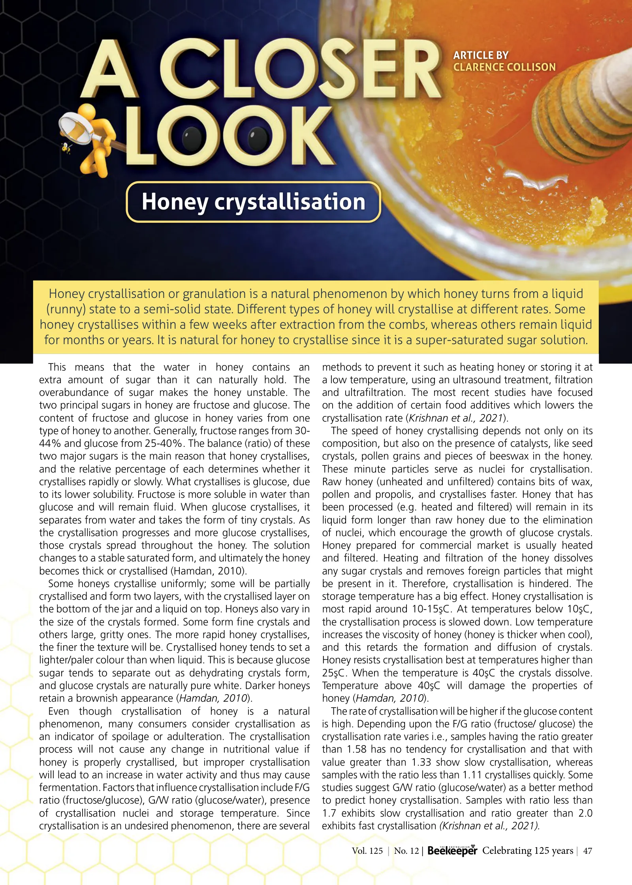

ARTICLE BY
CLARENCE COLLISON
Honey crystallisation
Mike Perry
This means that the water in honey contains an
extra amount of sugar than it can naturally hold. The
overabundance of sugar makes the honey unstable. The
two principal sugars in honey are fructose and glucose. The
content of fructose and glucose in honey varies from one
type of honey to another. Generally, fructose ranges from 30-
44% and glucose from 25-40%. The balance (ratio) of these
two major sugars is the main reason that honey crystallises,
and the relative percentage of each determines whether it
crystallises rapidly or slowly. What crystallises is glucose, due
to its lower solubility. Fructose is more soluble in water than
glucose and will remain fluid. When glucose crystallises, it
separates from water and takes the form of tiny crystals. As
the crystallisation progresses and more glucose crystallises,
those crystals spread throughout the honey. The solution
changes to a stable saturated form, and ultimately the honey
becomes thick or crystallised (Hamdan, 2010).
Some honeys crystallise uniformly; some will be partially
crystallised and form two layers, with the crystallised layer on
the bottom of the jar and a liquid on top. Honeys also vary in
the size of the crystals formed. Some form fine crystals and
others large, gritty ones. The more rapid honey crystallises,
the finer the texture will be. Crystallised honey tends to set a
lighter/paler colour than when liquid. This is because glucose
sugar tends to separate out as dehydrating crystals form,
and glucose crystals are naturally pure white. Darker honeys
retain a brownish appearance (Hamdan, 2010).
Even though crystallisation of honey is a natural
phenomenon, many consumers consider crystallisation as
an indicator of spoilage or adulteration. The crystallisation
process will not cause any change in nutritional value if
honey is properly crystallised, but improper crystallisation
will lead to an increase in water activity and thus may cause
fermentation. Factors that influence crystallisation include F/G
ratio (fructose/glucose), G/W ratio (glucose/water), presence
of crystallisation nuclei and storage temperature. Since
crystallisation is an undesired phenomenon, there are several
methods to prevent it such as heating honey or storing it at
a low temperature, using an ultrasound treatment, filtration
and ultrafiltration. The most recent studies have focused
on the addition of certain food additives which lowers the
crystallisation rate (Krishnan et al., 2021).
The speed of honey crystallising depends not only on its
composition, but also on the presence of catalysts, like seed
crystals, pollen grains and pieces of beeswax in the honey.
These minute particles serve as nuclei for crystallisation.
Raw honey (unheated and unfiltered) contains bits of wax,
pollen and propolis, and crystallises faster. Honey that has
been processed (e.g. heated and filtered) will remain in its
liquid form longer than raw honey due to the elimination
of nuclei, which encourage the growth of glucose crystals.
Honey prepared for commercial market is usually heated
and filtered. Heating and filtration of the honey dissolves
any sugar crystals and removes foreign particles that might
be present in it. Therefore, crystallisation is hindered. The
storage temperature has a big effect. Honey crystallisation is
most rapid around 10-15ºC. At temperatures below 10ºC,
the crystallisation process is slowed down. Low temperature
increases the viscosity of honey (honey is thicker when cool),
and this retards the formation and diffusion of crystals.
Honey resists crystallisation best at temperatures higher than
25ºC. When the temperature is 40ºC the crystals dissolve.
Temperature above 40ºC will damage the properties of
honey (Hamdan, 2010).
The rate of crystallisation will be higher if the glucose content
is high. Depending upon the F/G ratio (fructose/ glucose) the
crystallisation rate varies i.e., samples having the ratio greater
than 1.58 has no tendency for crystallisation and that with
value greater than 1.33 show slow crystallisation, whereas
samples with the ratio less than 1.11 crystallises quickly. Some
studies suggest G/W ratio (glucose/water) as a better method
to predict honey crystallisation. Samples with ratio less than
1.7 exhibits slow crystallisation and ratio greater than 2.0
exhibits fast crystallisation (Krishnan et al., 2021).
Honey crystallisation or granulation is a natural phenomenon by which honey turns from a liquid
(runny) state to a semi-solid state. Different types of honey will crystallise at different rates. Some
honey crystallises within a few weeks after extraction from the combs, whereas others remain liquid
for months or years. It is natural for honey to crystallise since it is a super-saturated sugar solution.
Vol. 125 | No. 12 |
Celebrating 125 years | 47